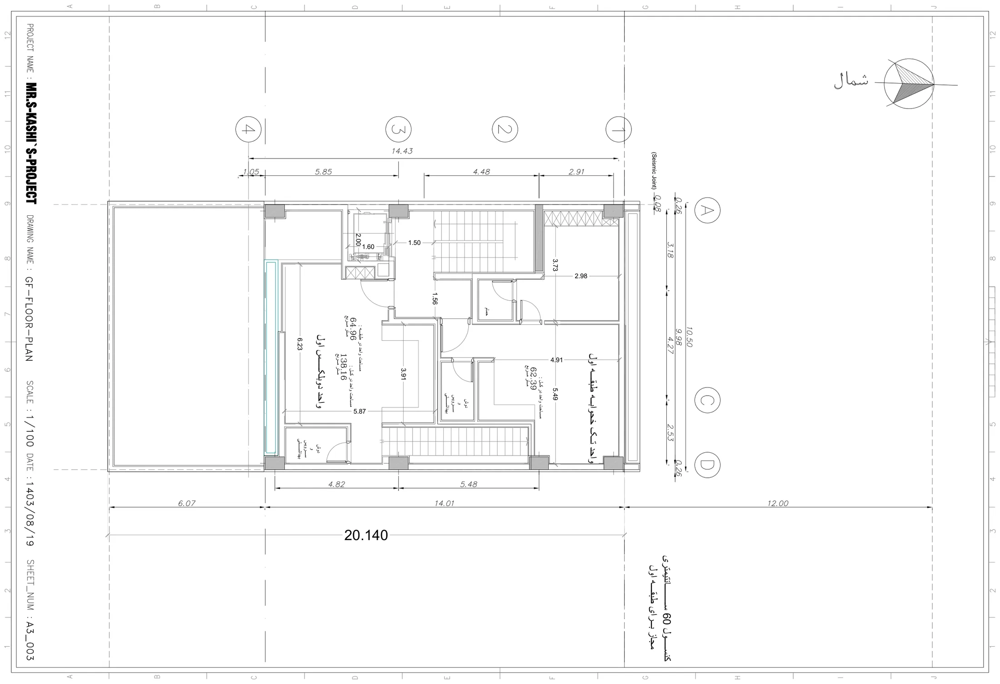

نقشه · طرح ۱۴۰۳
پلان طبقهٔ اول
طبقهٔ اول
{kind=link}

به چه نگاه کنیم
- «واحد تکخوابهٔ طبقهٔ اول» در سمت خیابان (شمال) با «مساحت واحد در کل: ۶۲٫۳۹ متر مربع»؛ اتاق ۵٫۴۹×۴٫۹۱، حمام، دوش و سرویس.
- «واحد دوبلکس اول» در سمت حیاط با «مساحت واحد در طبقه: ۶۴٫۹۶» و «در کل: ۱۳۸٫۱۶ متر مربع»؛ نشیمن ۶٫۲۳×۵٫۸۷.
- پلهٔ داخلی دوبلکس در ضلع شرقی که به خوابهای طبقهٔ دوم میرود.
- خط آبی در لبهٔ جنوبی نشیمن: بازشوی تمامقد رو به حیاط؛ کنارش کنج خالی کنار آسانسور — ایوان جنوبغربی.
- راهروی ۱٫۵۶ میان دو واحد و پلهٔ اصلی ۱٫۵۰؛ آسانسور ۲٫۰۰×۱٫۶۰.
- اتاق ۳٫۷۳×۲٫۹۸ در گوشهٔ شمالشرقی واحد تکخوابه با کمد هاشورخورده.
- کنسول ۰٫۶۰ در لبهٔ خیابان (یادداشت پایین راست)، نه ۱٫۲۰ طبقات بالاتر.
فضاها
واحد تکخوابه: اتاق خواب، واحد تکخوابه: نشیمن، واحد تکخوابه: حمام، واحد تکخوابه: دوش و سرویس بهداشتی، واحد دوبلکس اول: نشیمن، واحد دوبلکس اول: دوش و سرویس بهداشتی، پلهٔ داخلی دوبلکس، ایوان / خالی کنار آسانسور، پلکان و آسانسور
یادداشت
طبقهٔ اول ۱۴۰۳ دو واحد را کنار هم مینشاند: تکخوابهٔ ۶۲ متری رو به خیابان که معمار آن را واحد بازار میداند، و طبقهٔ پایین دوبلکس اول با نشیمن ۶۵ متری رو به حیاط. اینجا برای نخستین بار مساحتها روی برگه نوشته شده و مرز واحدها معلوم است — چیزی که در ۱۳۹۹ نبود. حلنشده: آشپزخانه در هیچ یک از دو واحد ترسیم نشده، مبلمان نیست، و ایوان جنوبغربی فقط یک کنج خالی است که صاحب زمین آن را نپذیرفت. کادر عنوان اشتباهاً «GF-FLOOR-PLAN» را تکرار کرده؛ شمارهٔ A3_003 و تاریخ ۱۴۰۳/۰۸/۱۹.